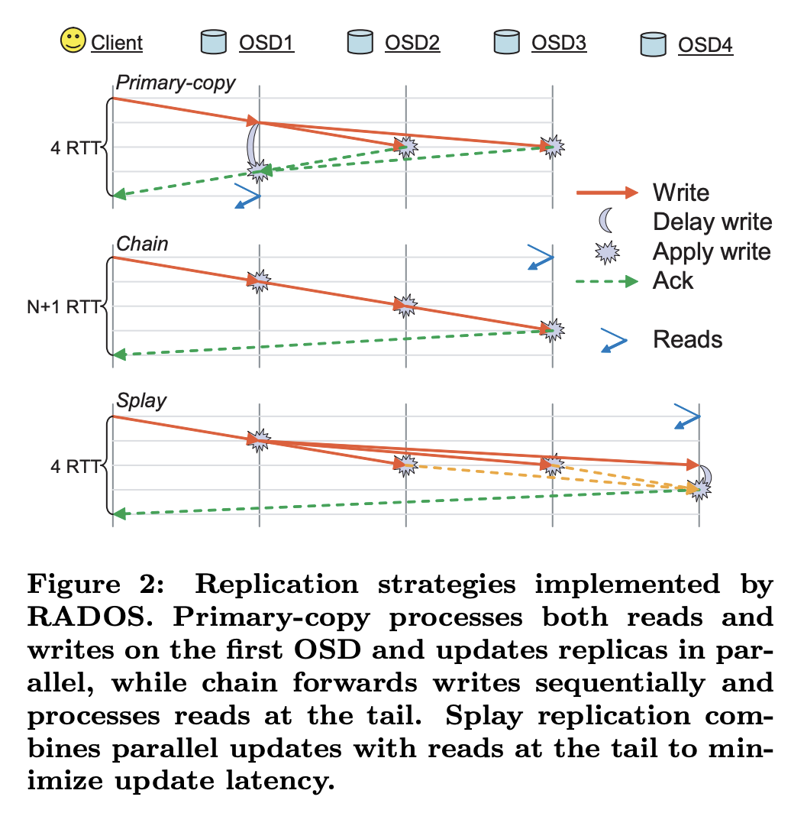

MIT 6.824 Distributed Systems 学习笔记¶
背景¶
本来打算去年上分布式系统课的，但是由于时间冲突没有选，今年想上的时候课程又没有开，因此利用寒假时间自学 MIT 6.824 Distributed Systems 课程 Spring 2022（Archive），跟着看视频，Lecture Notes 还有论文，同时也完成课程的实验。在这里分享一下我在学习过程中的一些笔记和感悟。有趣的是，MIT 6.824 Spring 2023 年把课号改成了 6.5840，类似地 6.828 OS 也改成了 6.1810。
MapReduce¶
背景¶
第一篇论文是 2004 年发表的 MapReduce: Simplified Data Processing on Large Clusters，论文的作者是耳熟能详的 Jeffrey Dean 和 Sanjay Ghemawat，这个思想到现在依然在广泛使用，目前比较常见的开源 MapReduce 实现是 Apache Hadoop。
论文要解决的问题是，随着数据量增大，需要在集群上并行完成任务，那么如何在集群上并行计算，分发数据，并且在机器出问题的时候继续工作，就成了很大的问题。所以如果有一个框架，负责完成并行、容错和复杂均衡这些底层细节，向上层应用提供一个简单的抽象，这样就可以减轻开发者的负担。MapReduce 就是这样的一个框架。
编程抽象¶
从框架的角度，需要设计一个合理的抽象，向下适合并行计算，向上适合应用的实现。从并行的角度来说，最容易想到的就是尴尬并行，直接把数据分布到各个节点上，每个节点处理自己的一部分数据。但是很多应用不能用尴尬并行实现，比如排序，每个节点对自己得到的一部分数据排好序以后，还需要进行合并，得到最终全局排好序的数据。所以 MapReduce 设计抽象的时候，分成了两个步骤：Map 和 Reduce。如果直接采用函数式编程中的 Map 和 Reduce 的定义，可以用下面的方式表示（类型采用 Haskell 的约定）：
- 输入类型是 A，数据是一个 A 数组，表示为
[A] - Map 函数：输入类型 A，输出类型 B，表示为
A -> B - Reduce 函数：输入两个 B，输出一个 B，表示为
B -> B -> B - 计算过程就是对输入的每个元素应用一次 Map 函数，然后通过 Reduce 函数进行规约，最后输出一个 B
从并行计算的角度来说，Map 函数可以尴尬并行，如果 Reduce 函数满足结合律，那么可以用树形的方式进行规约，否则就只能串行规约。拿排序的例子来说，如果要排序一个 int 数组，首先把数组分成 n 份，每一份的类型是 [Integer]，把它作为 Map 函数的输入，也就是说，A 就是 [Integer]，Map 函数进行排序，输出排序后的数组，类型 B 也是 [Integer]，然后 Reduce 函数合并两个已经排好序的数组。这里的 Reduce 满足结合律，所以可以很好地并行。
再考虑另一个应用，单词出现次数统计：输入若干段文本，Map 函数计算一段文本中的单词出现次数，输入一个字符串，输出一个 Map String Integer，键是单词，值是出现次数，所以 Map 函数的类型是 String -> Map String Integer，Reduce 函数类型是 Map String Integer -> Map String Integer -> Map String Integer，得到单词在所有文本中出现的总次数。可以想象，Reduce 实现类似下面的代码：
Input: Left, Right
Output: Result
For each key in Left.keys() \/ Right.keys():
Result[key] = (Left[key] or 0) + (Right[key] or 0)
可以看到，Reduce 函数的内层循环也是可以尴尬并行的，既然可以尴尬并行，那并行度会比树形规约更高，同时也更容易实现。如果基于单词次数统计算法进行抽象，重新设计：
- 输入类型是 A，数据是一个 A 数组，表示为
[A] - Map 函数：输入类型 A，输出类型
Map B C，表示为A -> Map B C - Reduce 函数：输入 B 和 C 数组，输出 C，表示为
B -> [C] -> C - 计算过程就是对输入的每个元素应用一次 Map 函数，得到若干个
Map B C，然后按照 B 进行划分，因为不同的 A 经过 Map 后可以得到同样的 B，所以 Reduce 输入是一个 B 以及多个 C。因为 Reduce 函数已经尴尬并行了，所以 Reduce 内部就没有再做树形规约。
单词统计在上面的抽象下，A 对应 String，也就是输入的文本内容，Map 函数统计单词的出现次数，B 是 String，C 是 Integer；Reduce 之前，同样的单词的 C 会被合并为一个数组 [Integer]，那么 Reduce 函数就是给定一个单词，以及它在各个文本中出现的次数数组，只需要对数组进行求和，就可以得到最终结果。
这个抽象已经和论文中给出的十分接近了，下面摘抄论文中的描述：
map (k1, v1) -> list(k2, v2)
reduce (k2, list(v2)) -> list(v2)
Map, written by the user, takes an input pair and produces a set of
intermediate key/value pairs. The MapReduce library groups together all
intermediate values associated with the same intermediate key I and
passes them to the Reduce function. The Reduce function, also written by
the user, accepts an intermediate key I and a set of values for that
key. It merges together these values to form a possibly smaller set of
values. Typically just zero or one output value is produced per Reduce
invocation. The intermediate values are supplied to the user’s reduce
function via an iterator. This allows us to handle lists of values that
are too large to fit in memory.
所以 MapReduce 从逻辑上可以分为三个步骤：
- Map 阶段：节点并行执行 Map 函数，每个节点处理一部分的
(k1, v1)输入 - Shuffle 阶段：收集 Map 阶段的计算结果，根据 k2 分发到不同的节点
- Reduce 阶段：节点并行执行 Reduce 函数，每个节点处理一部分的
(k2, list(k2))中间结果
实际运行的时候，这三个阶段可以流水线式地同时进行。
实现¶
讲完上层实现以后，MapReduce 框架本身需要处理底层的细节，比如给节点分配任务，监控任务的执行情况，如果出现节点宕机需要恢复等等。
首先考虑一个问题，就是输入保存在哪，输出要写到什么地方。一般来讲，数据规模比较大的时候，一个节点无法保存下所有数据，就需要一个分布式的文件系统来保存。在 MapReduce 的场景下，输入是保存在分布式的文件系统上的若干个文件，输出也会写入到分布式的文件系统中。既然 MapReduce 是 Google 出品的，论文中分布式文件系统用的是 Google 自家的 GFS（Google File System）。GFS 的细节先不考虑，后面阅读 GFS 论文的时候再讨论，目前只需要知道是一个分布式的文件系统，现在常用的 Hadoop 使用的则是 HDFS 作为分布式文件系统。
输入文件在 GFS 准备好以后，首先需要有一个机制来分配 Map 任务给各个计算节点。论文采用的方法是在一个节点上运行 Master，由 Master 负责分配任务。论文的考虑是，MapReduce 任务一般执行时间不长，在这段时间内，具体某个节点宕机的概率很小，但是在上千个节点中，至少有一个节点宕机的概率不小。所以它只用了一个 Master 节点。在 Map 阶段，Master 向各个 Worker 分配任务（实际实现上可能是 Worker 向 Master RPC 获取任务），Worker 从 GFS 读取输入数据，调用用户编写的 Map 函数，把结果写到本地存储中。没有保存 GFS 的原因是，后续 Shuffle 阶段还需要把数据传输到 Reduce 的节点，如果保存到 GFS 中，就要先通过网络写一次到 GFS 中，再从 GFS 读一次，比较耗费带宽和时间。放在本地存储的话，直接把中间结果通过网络从执行 Map 的节点传输到执行 Reduce 的节点即可。这里有一个权衡：如果中间结果保存在 GFS 中，好处是如果计算中途宕机了，可以从 GFS 中恢复，继续计算没有算完的部分，坏处是耗费较多网络带宽和存储（GFS 会重复保存多份）；如果中间结果保存在本地存储中，好处是网络开销小，坏处是一旦宕机了，就要从头开始计算。在论文的场景中，网络是一个瓶颈，因此选择了后者。
得到中间文件以后，下一步需要进行 Shuffle，而 Shuffle 的目的是要进行 Reduce。为了方便 Shuffle，在保存中间结果的时候，就首先对中间结果进行划分，例如要划分为 R 份，每一份对应一个 Reduce 任务（注意 R 不等于执行 Reduce 操作的节点的个数），那就对 key 进行哈希操作：hash(key) mod R，把中间结果写到 R 个文件中。这样，Master 把 R 个 Reduce 任务分配给各个 Worker 节点，并且告诉这些 Worker 所有的 Map 临时结果保存的节点地址信息。Worker 就从各个 Map 节点的机器上读取中间结果，进行排序和合并，然后对每个 Key 调用一次用户的 Reduce 函数。最后结果写到 GFS 中，以 R 个文件的形式来保存，这样就完成了整个 MapReduce 过程。你可能觉得奇怪，为什么最后不把 R 个文件合并起来？因为一次 MapReduce 的结果可以成为下一次 MapReduce 的输入，既然 MapReduce 输入就是多个文件，那中间的 MapReduce 输出保持多个文件就好了。到最后不再需要进行 MapReduce 的时候，再合并输出。
故障恢复¶
如果运行过程中，Worker 宕机了，Master 可以通过 heartbeat 发现宕机的 Worker，然后把任务分配到其他正常运行的 Worker 中。具体来讲，如果是 Map Worker 宕机，那需要新的 Worker 把之前执行过的所有 Map 任务重新跑，因为之前的 Map 任务的中间结果还保存在节点的本地存储中，宕机了就无法访问了；如果是 Reduce Worker 宕机，由于已经执行的 Reduce 任务的输出已经写到 GFS 中了，新的 Worker 可以接着继续执行没有完成的任务。如果 Master 宕机了，如果 Master 没有保存状态，很不幸，只能重新来过。论文没有怎么考虑这个情况，因为在这个场景下，Master 宕机概率很小。
还有一种“故障”，就是部分节点因为一些原因，它可以正常工作，但是执行任务特别慢。如果不处理的话，可能大部分任务都完成了，只有几个节点在慢吞吞地跑，其他节点都在等待。论文提出的办法是，如果整体任务快完成了，Master 可以给不同 Worker 同样的任务，这些 Worker 只要有一个跑出了结果即可，不需要等待最慢的那一个。其实就是拿更多的计算量换取更短的完成时间。
Hadoop¶
看一个实际的 MapReduce 例子，从 Hadoop MapReduce Tutorial 可以找到实现单词出现次数统计的代码：
private final static IntWritable one = new IntWritable(1);
private Text word = new Text();
public void map(Object key, Text value, Context context
) throws IOException, InterruptedException {
StringTokenizer itr = new StringTokenizer(value.toString());
while (itr.hasMoreTokens()) {
word.set(itr.nextToken());
context.write(word, one);
}
}
private IntWritable result = new IntWritable();
public void reduce(Text key, Iterable<IntWritable> values,
Context context
) throws IOException, InterruptedException {
int sum = 0;
for (IntWritable val : values) {
sum += val.get();
}
result.set(sum);
context.write(key, result);
}
这里的实现和我们前面讨论的是一样的。最后在 main 函数中启动 MapReduce 任务：
public static void main(String[] args) throws Exception {
Configuration conf = new Configuration();
Job job = Job.getInstance(conf, "word count");
job.setJarByClass(WordCount.class);
job.setMapperClass(TokenizerMapper.class);
job.setCombinerClass(IntSumReducer.class);
job.setReducerClass(IntSumReducer.class);
job.setOutputKeyClass(Text.class);
job.setOutputValueClass(IntWritable.class);
FileInputFormat.addInputPath(job, new Path(args[0]));
FileOutputFormat.setOutputPath(job, new Path(args[1]));
System.exit(job.waitForCompletion(true) ? 0 : 1);
}
实际使用的时候，先在 HDFS 中准备好输入文件，启动 MapReduce，然后可以在 HDFS 中找到计算结果：
$ bin/hadoop fs -ls /user/joe/wordcount/input/
/user/joe/wordcount/input/file01
/user/joe/wordcount/input/file02
$ bin/hadoop fs -cat /user/joe/wordcount/input/file01
Hello World Bye World
$ bin/hadoop fs -cat /user/joe/wordcount/input/file02
Hello Hadoop Goodbye Hadoop
$ bin/hadoop jar wc.jar WordCount /user/joe/wordcount/input /user/joe/wordcount/output
$ bin/hadoop fs -cat /user/joe/wordcount/output/part-r-00000
Bye 1
Goodbye 1
Hadoop 2
Hello 2
World 2
小结¶
MapReduce 论文提出了一个框架，以 Map 和 Reduce 操作的方式，使得很多应用可以简单地在集群上并行地完成计算，降低了集群使用的门槛。
Lab 1¶
MIT 6.824 的 Lab 1 就是用 Go 语言在模板仓库中实现一个 MapReduce。Lab 实际运行的时候，是在一个节点上跑多个进程来模拟多节点 MapReduce，所以直接用本地文件系统来保存输入输出文件，没有用到分布式文件系统。进程间通过 RPC 进行通信。Lab 会启动一个 Master 进程和若干个 Worker 进程，通过 Go plugin 的方式来嵌入用户的 Map 和 Reduce 函数。
具体实现的时候，Worker 通过 RPC 去向 Master 获取新的任务，并且告诉 Master 已经完成哪些任务。Master 会记录每个任务的状态，是处于尚未执行，正在执行还是已经执行完成。为了解决 Worker 宕机的情况，Master 会记录任务分配的时间，如果运行时间过长，则把任务恢复到尚未执行的状态，可以由新的 Worker 获取。
实际上我在实现的时候偷懒了，没有像论文那样，把之前所有属于同一个 Worker 的 Map 任务重新跑一遍，因为中间结果访问不到了。但是在实验中，即使 Worker“宕机”了，中间结果还是可以访问的。如果出题人想增加难度，可以在程序 crash 之前，把 Map 输出的中间结果从文件系统删掉。另外，实际的 MapReduce 系统是可以流水线进行 Map Shuffle 和 Reduce 的，我的实现做了简化，必须先完成所有的 Map，再完成所有的 Reduce。但在实际场景中，如果一个一个阶段做，到了 Shuffle 阶段，忽然 Map Worker 宕机了，就不得不回到 Map 阶段重新跑。
GFS¶
背景¶
第二篇论文是 2003 年的 The Google File System，讲述的是 GFS 分布式文件系统，也是上面的 MapReduce 所使用的分布式文件系统。Hadoop 使用的分布式文件系统 HDFS 和 GFS 很类似。
为了存大量的数据，需要使用集群，但是集群节点数量一多，就会经常出现节点宕机或者硬盘故障等问题，需要一个系统来保证 Fault Tolerance。并且为了让应用程序更容易迁移到集群上，提供文件系统的接口，从上层应用的角度来看，就是一个巨大的文件系统，可以同时从很多个节点访问，这样就减少了应用开发者的负担。设计时还需要考虑扩展性，如果存储节点越多，性能就越好。
GFS 在设计的时候，考虑到一些上层应用的特点。论文中认为，GFS 保存的文件都是比较大，不会出现大量的小文件（例如 PyPI），并且有大量的写入是在 Append，例如 MapReduce 中，Reduce Task 的输出就是追加到文件中，而不会在文件中间进行写入。所以 GFS 主要针对 Append 来优化，并且提供了原子 Append 操作，允许多个客户端同时进行 Append，适合多生产者的场景。另一方面，GFS 的上层应用不需要特别强的一致性，所以 GFS 以宽松一致性模型的代价，换来更好的性能，后面会进一步讨论这个问题。
接口¶
GFS 提供了文件系统的接口，包括常见的创建，删除，打开，关闭，读写文件等操作，但没有实现完整的 POSIX 文件系统接口，所以不希望 mount 到系统的某个路径上让应用程序访问，而是希望应用程序直接通过 GFS 的客户端库访问。
架构¶
GFS 的架构设计相对比较简单，只需要两类节点，即一台 master 节点和许多台 chunkserver 节点，其中 master 节点负责管理 metadata，监控 chunkserver 的状态，而 chunkserver 节点保存实际的数据。
文件系统中的文件被切分为固定大小的 chunk，每个 chunk 使用一个全局唯一的 64 位 chunk handle 标识，由 master 负责分配。这些 chunk 就保存在 chunkserver 上，这就是为啥叫做 chunkserver。
master 节点虽然不保存文件内容，但是要负责 metadata 的存储，记录文件由哪些 chunk 组成，每个 chunk 都保存在哪些 chunkserver 节点中。为了保证数据可靠性，chunk 需要保存在多个 chunkserver 节点上。当某个 chunkserver 节点宕机的时候，master 发现这个节点一段时间没有回应 heartbeat，master 就会把数据迁移到其他在线的 chunkserver 上。
这种单 master 的设计简化了 GFS 的设计，因为所有的管理都由一个 master 进程完成，但是 master 也可能会成为一个瓶颈，并且 master 宕机（需要后面讲的 Primary-Backup Replication）的时候，整个 GFS 就不可用了；同时也限制了整个集群的存储容量，因为 metadata 必须要保存在 master 节点的内存中，只能说不同时代有不同的背景，不同的背景下，就会有不同的取舍，出现不同的设计。当客户端想要读取数据的时候，向 master 询问，得到数据所在的 chunk 的 chunk handle 以及保存了数据的 chunkserver 地址，客户端再去找一个最近的 chunkserver 读取 chunk 内容，这样就减轻了 master 的网络负担。
为了保证 master 的可靠性，首先需要有备份，master 的更新会实时地同步到 backup 节点，当 master 宕机的时候，原来的 backup 就变成了 master。其次需要把 metadata 持久化到硬盘中，这个比较类似于日志型文件系统，把操作记录在日志中，然后定期打 checkpoint 来控制日志的长度。而 chunk handle 与 chunkserver 的映射关系并没有持久化，而是在启动后向 chunkserver 获取，这样实现起来比较简单，代价是启动时间可能比较久。
一致性模型¶
下面一个问题比较重要，就是 GFS 提供了什么样的一致性模型。最理想的情况就是 GFS 表现地像一台服务器的本地文件系统一样，是强的一致性模型。但是在分布式系统中实现强一致性模型一般并不简单，并且一般是以性能为代价。
接下来看 GFS 做了哪些保证，又有哪些地方可能出现不一致。对于文件的 metadata 的修改是原子的，例如创建文件，移动文件等等，因为只有一个 master，只需要进程内使用锁保护即可，实现比较简单。但是涉及到数据，就涉及到多个 chunkserver 上的副本，事情就复杂了起来。
GFS 的一致性模型保证，如果写入的时候，同时只有一个写入，当写入成功时，数据是一致的（consistent），即所有客户端都可以看到一样的数据，并且数据的内容就是要写入的数据（defined）。如果对同一片区域同时有多个成功的写入，那么数据依然是一致的（consistent），但是数据的内容可能混合了来自不同写入请求的数据（undefined）。如果一次写入失败了，例如写入的时候节点宕机，那么数据可能出现不一致（inconsistent），即不同客户端可能看到不同的数据，这是一个很弱的保证。
需要注意的是，按照上面的描述，如果多个客户端同时在文件末尾写入（regular append，seek 到文件末尾然后 write），虽然数据是一致的，但是数据会混合来自不同写入请求的数据（undefined），一些 Append 的数据就被覆盖了，这肯定是不希望看到的。所以 GFS 提供了原子的 Append 操作，保证即使在并发的情况下，每个 Append 要写入的数据都会正常写入，不会出现上面提到的被覆盖的问题，但是可能会被写入不止一次（at least once），并且如果 Append 的时候 chunk 写不下了，为了保证原子性，会插入 padding 以结束当前 chunk，在下一个 chunk 重新 Append。
可以看到，这个一致性模型比较弱，应用在使用 GFS 的时候，需要针对这一点进行处理，不然可能会出现问题。例如如果需要并行写入的话，尽量使用原子 Append 操作，但是原子 Append 操作可能会在文件中引入 padding 和重复的数据，这些需要应用在读取的时候进行处理。
实现¶
为了实现上面的一致性模型，需要保证同一个 chunk 保存在不同 chunkserver 上的 replica 按照同样的顺序更新，并且客户端读取数据的时候，看到的都是最新版本的 replica。为了保证顺序一致，GFS 的办法是让一个节点来决定一个顺序，然后让其余节点和它保持一致。这个特别的节点叫做 primary，当客户端要写入到某个 chunk 的时候，master 从保存了这个 chunk 的若干个 chunkserver 中选择一个节点作为 primary，由 primary 决定写入的顺序。
选定 primary 后，正常情况下就不需要改变了，但是需要考虑 primary 宕机的情况，所以 master 会监测 primary 节点的状态，如果它一段时间没有 heartbeat，需要设置其他 chunkserver 节点为 primary。但是，这里也有一个可能，就是 primary 并没有宕机，而是 master 和 primary 之间的网络中断。此时 primary 认为自己是 primary，正常处理客户端请求并更新数据，同时 master 认为原来的 primary 宕机了，选了一个新的 primary，此时同时有两个 primary 节点可以更新数据，就会出现一致性问题了。
GFS 的解决办法是 lease，也就是说 primary 不是永久的，而是有时间限制的，例如 60s。如果 primary 一直在处理写入请求，那它就可以不断向 master 延长 lease 的时间限制，如果超时前，还是没有得到来自 master 的响应，那就不允许新的写入。另一方面，master 发现当前 primary 宕机后，要等到 lease 超时，再选出一个新的 primary。这样就解决了上述同时出现多 primary 的问题。
接下来描述一下，一次写入要经过的过程：
- 客户端要写入文件的某个 chunk，询问服务端，哪个 chunkserver 持有 lease，以及其他的 replica 所在的 chunkserver；如果服务器还没有分配 lease，则分配给某一个 replica 所在的 chunkserver。
- 客户端缓存下 lease 和 replica 信息，之后的写入不需要联系 master，直接联系 primary 即可
- 客户端把要写入的数据发送给所有的 replica，当所有的 replica 都收到数据的时候，向 primary 发起写入请求；primary 按请求顺序给每个请求分配一个唯一的编号，然后按照编号顺序来写入数据
- primary 把写入请求转发到其他 replica（secondary replica），其他 replica 也按照编号顺序来学日数据
- secondary replica 完成写入后，通知 primary replica；所有 replica 完成写入后，primary 通知客户端写入完成
可以看到，primary 节点给并发请求分配了串行的编号，这样在所有的 replica 上都会按照同样的顺序进行写入，保证了数据的一致性。只有在所有 replica 完成写入以后才会通知客户端，所以客户端后续从任何一个 replica 读取，都会得到新的数据。
实际上，上面的第 3 步在实现的时候，并不是由客户端并行发给所有的 replica，这样瓶颈会在客户端的网络；而是客户端发给最近的 chunkserver，chunkserver 发给下一个，以类似链表的方式流水线式传输。
原子 Append 操作的实现方法和上面写入的基本一样，只不过当 primary 发现当前 chunk 写不下的时候，会转而写入 padding，把 chunk 写满，然后让客户端重试，这样客户端就会向 master 申请写入一个新的 chunk，解决了写不下的问题。
在之前提到过，原子 Append 实际上是 at-least-once，也就是说可能会写入多份。比如在进行原子 Append 的时候，某个 replica 宕机了，此时客户端需要重试，重试的时候就可能出现重复的数据。这个需要应用程序来处理。
接下来考虑一个问题，当一个 chunkserver 重启了，怎么判断它上面保存的数据是否是最新的呢？GFS 的实现方法是给每个 chunk 保存一个版本号，当客户端要写入数据的时候，master 在分配 lease 的同时，版本号加一，并且通知在线的 replica，这样离线的 replica 在重启以后，master 可以发现它的版本不是最新的。客户端在从 chunkserver 读取数据的时候，也会检查版本号是否正确。
小结¶
GFS 是一个分布式的文件系统，使用单 master 和多 chunkserver 的架构，动态指定 primary replica 来分配写入操作的顺序，并且通过 lease 来防止网络分区的问题。缺点是只有一个 master，扩展性受限，一致性模型比较弱，需要应用程序的针对性处理。
HDFS¶
Hadoop 的 HDFS 很多设计上参考了 GFS，它的 master 叫做 namenode，chunkserver 叫做 datanode。不过，HDFS 的一致性模型 one-copy-update-semantics 比 GFS 更加严格，与传统的本地 POSIX 文件系统一致。HDFS 甚至使用了 write-once-read-many 访问模型，也就是文件一旦写入，已经写过的部分就不能再修改，只能 append 或者 truncate。
按照教程启动一个单节点的 HDFS 集群，需要写两个配置文件：
配置文件 core-site.xml，用于 Hadoop 发现 HDFS：
<configuration>
<property>
<name>fs.defaultFS</name>
<value>hdfs://localhost:9000</value>
</property>
</configuration>
配置文件 hdfs-site.xml，降低 replication 数，否则无法单节点工作：
<configuration>
<property>
<name>dfs.replication</name>
<value>1</value>
</property>
</configuration>
接下来，分别启动 namenode 和 datanode 就可以了：
export HADOOP_CONF_DIR=/path/to/hadoop/conf
# Format before first launch
hdfs namenode -format
# Start namenode
hdfs namenode
# Start datanode
hdfs datanode
有了 HDFS 以后，就可以在 HDFS 上进行 MapReduce：
# Run wordcount with HDFS
hadoop jar $HADOOP_HOME/share/hadoop/mapreduce/hadoop-mapreduce-examples-3.3.4.jar wordcount input output
Primary/Backup Replication¶
背景¶
接下来要讨论的是 Primary/Backup Replication。实际上在 GFS 的时候，就提到了一个问题，如果 master 宕机了怎么办？GFS 的办法是 Primary/Backup Replication，即在 master 运行的同时，同时运行一份 master 的 backup，随时保持 master 和 backup 的一致性。如果 master 宕机了，backup 就可以成为新的 master 继续工作。
MIT 6.824 课程在讨论 Primary/Backup Replication 的时候，引用了 2010 年的论文 The Design of a Practical System for Fault-Tolerant Virtual Machine 的例子。下面按照 Lecture Notes 的思路，先讨论 Replication 的方法，再讨论 Fault Tolerant Virtual Machine。
Replication¶
为了保证 Primary 和 Backup 之间的一致性，可以想到两种办法。第一种办法是 State transfer，对 Primary 的当前状态进行快照，把快照通过网络定期写入到高可用的存储中，如果 Primary 宕机了，则在其他节点上启动新的 Backup 进程，从保存的状态中恢复。这样做的缺点是状态可能很大，每次传输的数据可能很多，一般还需要把日志持久化，保证快照之后发生的变化不会丢失，恢复的时候，先从快照恢复状态，再重放快照之后的日志。第二种办法是 Replicated state machine，这种设计下 Backup 是一直在运行的，只不过不会处理请求。当 Master 需要更新状态的时候，Master 把要更新的操作发送给所有的 Backup，Backup 自己按照同样的方法更新状态。此时的服务就像一个状态机，如果初始状态一致，按照相同的顺序进行相同的确定性的操作，那么最终的状态也是一致的，所以叫做 Replicated state machine。这样做的好处是网络上要传输的数据比较少，但是实现起来比较复杂，要把服务实现成一个确定性的状态机。
GFS 的论文中采用的是第一种方法：The master state is replicated for reliability. Its operation log and checkpoints are replicated on multiple machines.，然后 If its machine or disk fails, monitoring infrastructure outside GFS starts a new master process elsewhere with the replicated operation log。
Fault Tolerant Virtual Machine¶
接下来就来看 VMware 的论文，如何使用 Replicated State Machine 的方法来实现高可用的虚拟机。既然是 State Machine，就得想清楚，State 是什么，State transfer 又是什么。State 包括寄存器（例如 EAX，EBX 等），各种特权态相关的配置寄存器（如 CR2）、MSR，还有内存里的数据和指令。在没有外部输入的影响下，除了少数的情况（例如 RDRAND 和访问外设，读时间等等），单核 CPU 执行应该是确定性的，所以可以认为从某个 State 开始，执行 n 条指令这一个操作是一个 State transfer。考虑外部影响的话就有很多，例如中断，比如 DMA（网卡，磁盘），或者通过 MMIO 或 IO Port 读写外设。
由于 VMware 本来就是虚拟机，可以想到，当 CPU 执行时，遇到这些出现外部影响，都 trap 到虚拟机的管理程序，这时候就记录下来，CPU 执行了 n 条指令，然后记录并应用外部的影响，然后继续执行。
有了这个基础以后，就可以构建 Fault Tolerant Virtual Machine 了。具体方法：
- 启动 Primary 和 Backup 虚拟机，寄存器和内存初始化成一样的内容
- 开始执行 Primary，等待外部影响的到来，或者执行了会带来不确定性的指令，trap 到虚拟机管理程序
- 记录下 Primary 已经执行的指令条数 n，记录下外部影响或不确定性的内容和结果，发送给 Backup，然后继续执行
- Backup 收到 Primary 发送过来的信息，开始执行 CPU，并且指定运行 n 条指令后 trap，然后施加外部影响
- 循环这个过程，如果 Primary 宕机了，则从 Backup 继续开始执行
可以看到，这个过程中 Primary 始终领先 Backup 至少一步：Primary 走一步，Backup 走一步，Primary 再走一步，Backup 再走一步。
对于时钟中断来讲，比较简单，只需要记录时间中断在哪个指令处到达即可。网络的话则比较复杂，为了让 OS 不会看到 DMA 的中间状态，论文的方法是先把 DMA 的数据缓存下来，然后在模拟中断到达的同时，也把内存更新了，OS 看到的就是接收到中断的时候，“瞬间”DMA 也完成了。其他的不确定性也可以用类似的方法来解决。题外话，处理器验证的时候，处理器和模拟器的 cosim 也是类似的方法，只不过可能是指令级别的 lockstep。
还需要考虑一种情况，就是如果 Primary 跑的比较快，Backup 的状态和 Primary 有了一定的差距，此时 Primary 处理了一个来自客户端的请求，更新了内部状态，并且发送了响应。但此时 Backup 还没有来得及同步这个信息，可能还处于之前的状态，如果 Primary 宕机了，这个请求没来得及同步到 Backup 就丢失了，客户端以为状态变了，实际上 Backup 的状态没有变。所以只要 Primary 不发送数据出去，Backup 就可以当什么事情都没有发生过，假装丢包了。所以对于这一类外部可以观测到的行为，需要在缓冲区中等待，当 Backup 也同步了以后，才能发送出去。这个就是所谓的 The Output Rule。
Raft¶
介绍¶
Raft（Lecture Notes）是一个分布式共识算法，对于一个 n 节点的系统，需要超过 n/2 个节点在线才可以工作。超过 n/2 的目的是防止网络分区，保证只有最多一个网络分区可以有进展。Raft 实现了一个 Replicated State Machine，也就是说维护一个分布式的状态机，只要保证初始状态一致，状态转移一致，那么状态机的当前状态也会一致。所以 Raft 的目标就是保证状态转移的历史一致。
Raft 围绕着 leader 进行，需要首先选举出一个 leader，所有的请求都由 leader 处理。leader 接收到请求后，把请求发送给其他的节点，当有过半的节点记录了这个请求，就可以提交请求的内容到状态中。具体来说，请求过程如下：
- 客户端发送请求给 leader
- leader 把请求加入到日志中，但不应用到状态机
- leader 发送日志给其他节点（follower）
- follower 把 leader 发送的日志加入到日志中
- leader 等到有超过半数的节点（leader+follower）的日志有上述请求，就把请求应用到状态机
- leader 发送响应，告诉客户端请求已经完成
- leader 告诉 follower 可以应用上述请求
- follower 把请求应用到状态机
下面仔细讨论 Raft 的一些细节。
Leader election¶
首先是 leader election，这一步需要选举出一个 leader。为了保证 leader 唯一，要求每个节点每次只能投一票，并且有超过半数的节点投票给同一个 leader。但如果运气不好，有可能选举不出来，可能需要进行多轮投票。怎么表示投票的轮次呢？Raft 引入了 term 的概念。每个 term 最多一个 leader，如果 leader 宕机了，或者没有选举出 leader，就可以启动一个新的 term。
leader 会定期发送心跳给其他节点，当节点发现当前的 leader 一段时间都没有发送心跳，就可以认为当前的 leader 宕机了，可以开启新一轮的 leader election，因此增加 currentTerm，并且把身份变成 candidate，开始拉票。拉票就是发给其他节点，让其他节点投票给自己。每个节点每个 term 只能给一个节点投票。当某个节点的票数过半的时候，节点的身份转为 leader，开始给其他节点发心跳包，其他节点就自动转为 follower。
如果多个节点同时拉票，可能会出现分票的情况，没有节点票数过半，这样就只能在超时以后，重新投票。为了防止节点继续同时拉票，这个超时的时间是随机化的，这样随机出短的超时的节点更容易胜出成为 leader。
Log¶
有了 leader 以后，就要开始处理来自客户端的请求了。为了保证一致性，需要同步请求到超过半数的节点，并且按照同样的顺序来处理写入的请求。这就引入了 Log 的概念。Log 可以认为是一个链表，链表的元素就是对状态的修改，例如让状态加一。对于一个状态机来说，如果初始状态一样，中间进行的每个步骤都一样，那么最终状态也一样。在 Raft 里，Log 就是执行的每个步骤，因此只需要保证所有节点的 Log 一致，就可以保证状态的一致性。
那么，什么时候把 Log 上新加入的 Entry 应用到状态机上呢？条件是，需要至少半数的节点认同这个 Entry。具体地，也就是有超过半数的节点，从 Log 的开头到这个 Entry 都是一样的。在满足这个条件之后，即使网络出现问题，由于 Leader Election 的时候，需要超过半数的节点给同一个 candidate 投票，而投票的时候，会检查 Log，二者相结合，保证了 Log 的一致性。
具体到实现上，如果目前还没有确认的是 Log 的第 n 项，那么 Leader 会询问各个 Follower 当前的状态，如果经过统计发现，超过半数的节点在前 n 项 Log 上达到了一致，那么 Leader 就会把第 n 项应用到状态机里，并且通知其他 Follower 也可以进行同样的操作。
实际在 Lab 2B 实现的时候，会发现有很多细节上的问题：怎么判断 Log 的前 n 项是一致的呢？直接把整个 Log 传输一遍不现实。Raft 的做法是 Leader 保存 Follower 的 prevLogIndex 和 prevLogTerm，根据 prevLogIndex 和 prevLogTerm 查询自己的历史。如果能匹配上，就继续发送新的 Log 给 Follower。如果匹配不上，就继续往回找，一直找到匹配的 Index 和 Term 为止。这个过程会涉及到一些边界情况，例如一直退到开头等等，需要小心地处理。
Persistence & Snapshot¶
到目前为止，讨论的 Raft 的实现还没有考虑异常退出，虽然在异常退出的时候，可以重头传一遍 Log 再启动，但是这样需要比较久的时间，因此需要做持久化（Persistence）。具体地，需要保存一些状态到硬盘上，那么之后重启的时候，可以从硬盘保存的数据进行恢复。Raft 论文中讨论了需要持久化的一些状态，剩下的则是不需要持久化的。这样做是为了提高性能：持久化把硬盘引入到了处理请求之中，可能会使得硬盘读写变成瓶颈。
另一方面，随着 Raft 协议的进行，Log 会一直增长，增长到一定长度的时候，就会比保存下当前状态更大，此时就可以考虑做快照（Snapshot）。实际上，快照就是把 Log 从一个地方断开，把断开处当时的状态保存下来，相当于从一个快照开始，应用了新的 Log，这样就节省了空间。如果一个节点数据丢失了，也可以从其他节点恢复快照，而不用恢复历史的整个 Log。
当然了，快照又会引入一些复杂性：之前的很多情况下，假设了节点所有历史的 Log 是完整的，所以慢慢找总是可以找到一个共同的 Log 前缀。但进行快照以后，共同 Log 前缀可能处于被快照的 Log 部分，此时就只能传输一个新的 Snapshot 过去，覆盖掉历史。
ZooKeeper¶
ZooKeeper 要解决的问题是，实现一个 Paxos/Raft，太过复杂，为了分布式，需要把应用改造成适合 Paxos/Raft 的样子。但很多时候，只是希望有一个现成分布式的系统来方便实现一个功能。
因此 ZooKeeper 实现了一个高可用的状态存储，有点类似与用 Raft 实现的 KV 存储，只不过它的 api 被设计用来实现上层的分布式系统。它是一个树形的组织结构，类似文件系统，每个文件是多版本的，可以说是 hierarchical kv 存储。每个写操作，是一个原子操作，输入文件名，版本号和新内容，如果版本号一致，才更新内容和版本号。除了轮询以外，ZooKeeper 还提供了 watcher api，可以在服务端更新的时候通知客户端。ZooKeeper 使用了 Zab 一致性协议，具体内容没有细看。
ZooKeeper 用途很多，可以用来保存配置，可以维护一个组的成员，可以实现锁等等。它通过 ephemeral node 来实现回收，并且通过版本号实现请求的并发，客户端的请求也是严格按顺序处理的。这样做的好处是性能比较好。
和 Raft 论文相比较，Raft 论文核心是提出一个新的一致性协议。ZooKeeper 则是在 Zab 一致性协议的基础上构建出一个比较好用的工具，类似 etcd 保存 k8s 配置那样。“ZooKeeper solves the same problem as etcd: distributed system coordination and metadata storage.”
所以 Zab 和 Raft 是对应的，都是一致性协议，而 ZooKeeper 和 etcd 是对应的，都是分布式的状态存储。
Chain Replication¶
接下来要解决的问题是，对于一个分布式的存储系统，如何保证高性能、高可用以及强一致性。保证高可用性的办法就是 Replication，把同一份数据写到多个节点上，这样就算部分节点宕机了，依然可以访问数据；但是也面临着如何保证一致性的问题，怎么保证多个节点上的数据是一致的？
首先来看 Primary/Backup 方法，就是指定一个节点为 Primary，其余节点为 Backup。客户端的所有的请求（读 + 写）都会发送到 Primary。当 Primary 宕机的时候，则把其中一个 Backup 升级为 Primary。回忆一下 GFS，会发现 GFS 采用了 Primary/Backup 方法。当客户端要写入数据的时候，需要四个阶段：
- 客户端发送给 Primary
- Primary 并行发送给所有的 Backup
- 所有的 Backup 告诉 Primary 写入完成
- Primary 告诉客户端写入完成
这样设计是为了保证强一致性：所有请求都在 Primary 处理，自然就给请求确定了一个顺序，接下来就可以很方便地满足强一致性的要求了。需要注意的是，在第 3 步之前，Primary 还不能确认这次写入已经完成，所以如果此时又来了一个读取请求，要么提供旧的数据，要么等到第 3 步完成才返回新的数据，这样才能满足强一致性的要求。
和 Raft/Zookeeper 等 quorum 一致性算法进行对比的话，Primary/Backup 方法可以容忍 N-1 个节点的宕机，而 quorum 可以容忍 N/2 个节点的宕机。当然了，代价就是需要把数据存储更多份。但实际上，即使采用了 Primary/Backup 方法，还需要考虑怎么维护这些存储节点的状态，这需要一个单独的配置节点来管理。那怎么保证配置节点的高可用性？这时候就可以用 Raft 或者上面提到的 ZooKeeper 了。这就是在不同的层次上，用不同的一致性协议，达到不同的目的。
但是 Primary/Backup 方法的所有请求压力都在 Primary 节点上，并且 Primary 节点需要消耗很多的网络带宽，因为要给每个 Backup 发送一份数据，这样 Primary 节点的 CPU 和网络都可能成为瓶颈。为了解决这个问题，Chain Replication 论文提供了另一个解决方案。
它的思路是，既然不希望 Primary 成为瓶颈，那就把 Primary 的任务分担到多个节点上。具体来讲，Primary/Backup 方法中，读请求，读响应，写请求，写响应都发生在 Primary 节点上。而 Chain Replication 方法中，读请求，读响应，写响应发生在 Tail 节点上，写请求发生在 Head 节点上。这是怎么做的呢？
Chain Replication 把节点串成一个链表，既然是链表，就有头节点 Head 和尾节点 Tail，写请求从 Head 流向 Tail，所以链表中的节点，越接近 Head 数据越新，越接近 Tail 数据越旧，这样只有到达 Tail 的数据是保存了 N 份，可以认为是写入完成的，所以由 Tail 来发送写响应。假如有三个节点，那么一次写请求的流程就是：
- 客户端发送写请求给节点 1（Head）
- 节点 1（Head）更新自己的数据，然后发送给节点 2
- 节点 2 更新自己的数据，然后发送给节点 3（Tail）
- 节点 3（Tail）更新自己的数据，发送写响应给客户端
和 Primary/Backup 方法进行对比的话，同样是一次写入，Primary/Backup 需要四步，Chain Replication 需要 N+1 步，所以如果 N 比较大了，那么 Chain Replication 的延迟也会比较大。但 Chain Replication 的好处在于解决了瓶颈，原来 Primary 的工作分散到了 Head 和 Tail，并且数据通过网络按照链表顺序一路往下传，可以很好地利用网络带宽。
Ceph 的论文 RADOS: A Scalable, Reliable Storage Service for Petabyte-scale Storage Clusters 里画了一个图，对比了上面两种方法和 Splay Replication：

第一种 Primary-copy 也就是 Primary/Backup 方法，写请求需要四个 RTT，等到 Backup 都写入完成告知 Primary 以后，Primary 就可以响应读请求了。第二种 Chain 也就是 Chain Replication 方法，写请求需要 N+1 个 RTT，由于写请求到达 Tail 的时候已经保证了写入的一致性，所以随时可以读，不需要等到写入完成。第三种 Splay 结合了以上两种办法。